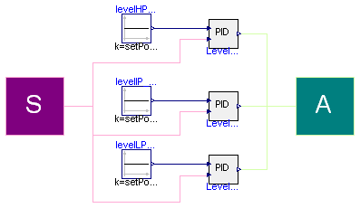

| Name | Description |
|---|---|
| InterfacesControl | Base of class for control |
| levelsControl | PID controllers for levels control |
| Type | Name | Description |
|---|---|---|
| Sensors | SensorsBus | |
| Actuators | ActuatorsBus |
partial model InterfacesControl "Base of class for control" Buses.Sensors SensorsBus; Buses.Actuators ActuatorsBus; end InterfacesControl;

| Type | Name | Default | Description |
|---|---|---|---|
| Length | setPoint_levelHP | 0 | Set point level of HP drum [m] |
| Length | setPoint_levelIP | 0 | Set point level of IP drum [m] |
| Length | setPoint_levelLP | 0 | Set point level of LP drum [m] |
| PID - level HP | |||
| Real | Kp_levelHP | 3 | Proportional gain (normalised units) |
| Time | Ti_levelHP | 400 | Integral time [s] |
| Time | Td_levelHP | 0 | Derivative time [s] |
| Real | PVmin_levelHP | -1 | Minimum value of process variable for scaling |
| Real | PVmax_levelHP | 1 | Maximum value of process variable for scaling |
| Real | CSmin_levelHP | 30 | Minimum value of control signal for scaling |
| Real | CSmax_levelHP | 100 | Maximum value of control signal for scaling |
| Real | PVstart_levelHP | 0.5 | Start value of PV (scaled) |
| Real | CSstart_levelHP | 0.5 | Start value of CS (scaled) |
| PID - level IP | |||
| Real | Kp_levelIP | 3 | Proportional gain (normalised units) |
| Time | Ti_levelIP | 600 | Integral time [s] |
| Time | Td_levelIP | 0 | Derivative time [s] |
| Real | PVmin_levelIP | -1 | Minimum value of process variable for scaling |
| Real | PVmax_levelIP | 1 | Maximum value of process variable for scaling |
| Real | CSmin_levelIP | 8 | Minimum value of control signal for scaling |
| Real | CSmax_levelIP | 20 | Maximum value of control signal for scaling |
| Real | PVstart_levelIP | 0.5 | Start value of PV (scaled) |
| Real | CSstart_levelIP | 0.5 | Start value of CS (scaled) |
| PID - level LP | |||
| Real | Kp_levelLP | 3 | Proportional gain (normalised units) |
| Time | Ti_levelLP | 800 | Integral time [s] |
| Time | Td_levelLP | 0 | Derivative time [s] |
| Real | PVmin_levelLP | -1 | Minimum value of process variable for scaling |
| Real | PVmax_levelLP | 1 | Maximum value of process variable for scaling |
| Real | CSmin_levelLP | 500 | Minimum value of control signal for scaling |
| Real | CSmax_levelLP | 2500 | Maximum value of control signal for scaling |
| Real | PVstart_levelLP | 0.5 | Start value of PV (scaled) |
| Real | CSstart_levelLP | 0.5 | Start value of CS (scaled) |
| Type | Name | Description |
|---|---|---|
| Sensors | SensorsBus | |
| Actuators | ActuatorsBus |
model levelsControl "PID controllers for levels control"
extends InterfacesControl;
//PID for level HP control
parameter Real Kp_levelHP=3 "Proportional gain (normalised units)";
parameter SI.Time Ti_levelHP=400 "Integral time";
parameter SI.Time Td_levelHP=0 "Derivative time";
parameter Real PVmin_levelHP=-1
"Minimum value of process variable for scaling";
parameter Real PVmax_levelHP=1
"Maximum value of process variable for scaling";
parameter Real CSmin_levelHP=30 "Minimum value of control signal for scaling";
parameter Real CSmax_levelHP=100
"Maximum value of control signal for scaling";
parameter Real PVstart_levelHP=0.5 "Start value of PV (scaled)";
parameter Real CSstart_levelHP=0.5 "Start value of CS (scaled)";
parameter SI.Length setPoint_levelHP=0 "Set point level of HP drum";
//PID for level IP control
parameter Real Kp_levelIP=3 "Proportional gain (normalised units)";
parameter SI.Time Ti_levelIP=600 "Integral time";
parameter SI.Time Td_levelIP=0 "Derivative time";
parameter Real PVmin_levelIP=-1
"Minimum value of process variable for scaling";
parameter Real PVmax_levelIP=1
"Maximum value of process variable for scaling";
parameter Real CSmin_levelIP=8 "Minimum value of control signal for scaling";
parameter Real CSmax_levelIP=20 "Maximum value of control signal for scaling";
parameter Real PVstart_levelIP=0.5 "Start value of PV (scaled)";
parameter Real CSstart_levelIP=0.5 "Start value of CS (scaled)";
parameter SI.Length setPoint_levelIP=0 "Set point level of IP drum";
//PID for level LP control
parameter Real Kp_levelLP=3 "Proportional gain (normalised units)";
parameter SI.Time Ti_levelLP=800 "Integral time";
parameter SI.Time Td_levelLP=0 "Derivative time";
parameter Real PVmin_levelLP=-1
"Minimum value of process variable for scaling";
parameter Real PVmax_levelLP=1
"Maximum value of process variable for scaling";
parameter Real CSmin_levelLP=500
"Minimum value of control signal for scaling";
parameter Real CSmax_levelLP=2500
"Maximum value of control signal for scaling";
parameter Real PVstart_levelLP=0.5 "Start value of PV (scaled)";
parameter Real CSstart_levelLP=0.5 "Start value of CS (scaled)";
parameter SI.Length setPoint_levelLP=0 "Set point level of LP drum";
PowerPlants.Control.PID Level_HP(
Kp=Kp_levelHP,
Td=Td_levelHP,
Ti=Ti_levelHP,
PVmin=PVmin_levelHP,
PVmax=PVmax_levelHP,
CSmin=CSmin_levelHP,
CSmax=CSmax_levelHP,
PVstart=PVstart_levelHP,
CSstart=CSstart_levelHP);
PowerPlants.Control.PID Level_IP(
Kp=Kp_levelIP,
Td=Td_levelIP,
Ti=Ti_levelIP,
PVmin=PVmin_levelIP,
PVmax=PVmax_levelIP,
CSmin=CSmin_levelIP,
CSmax=CSmax_levelIP,
PVstart=PVstart_levelIP,
CSstart=CSstart_levelIP);
PowerPlants.Control.PID Level_LP(
Kp=Kp_levelLP,
Td=Td_levelLP,
Ti=Ti_levelLP,
PVmin=PVmin_levelLP,
PVmax=PVmax_levelLP,
CSmin=CSmin_levelLP,
CSmax=CSmax_levelLP,
PVstart=PVstart_levelLP,
CSstart=CSstart_levelLP);
public
Modelica.Blocks.Sources.Constant levelHP_SP(k=setPoint_levelHP);
public
Modelica.Blocks.Sources.Constant levelIP_SP(k=setPoint_levelIP);
public
Modelica.Blocks.Sources.Constant levelLP_SP(k=setPoint_levelLP);
equation
connect(SensorsBus.y_drumHP, Level_HP.PV);
connect(SensorsBus.y_drumIP, Level_IP.PV);
connect(SensorsBus.y_drumLP, Level_LP.PV);
connect(ActuatorsBus.flowRate_feedIP, Level_IP.CS);
connect(ActuatorsBus.flowRate_feedHP, Level_HP.CS);
connect(levelHP_SP.y, Level_HP.SP);
connect(levelIP_SP.y, Level_IP.SP);
connect(levelLP_SP.y, Level_LP.SP);
connect(ActuatorsBus.nPump_feedLP, Level_LP.CS);
end levelsControl;